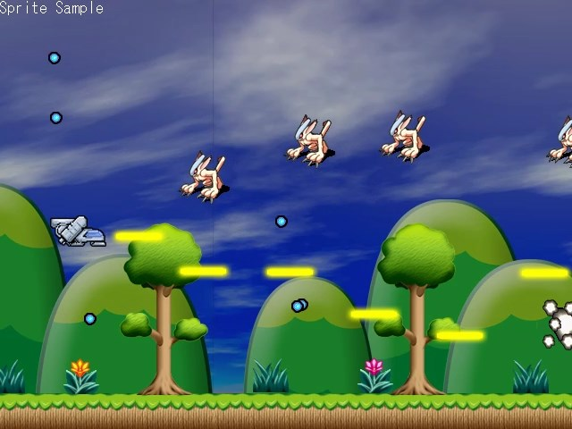
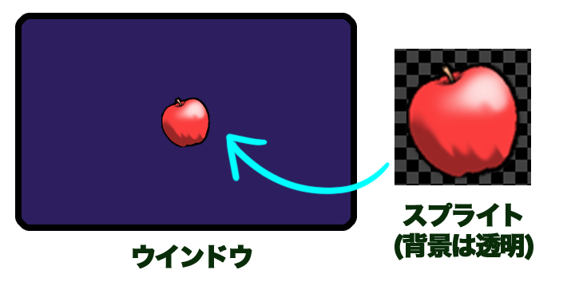
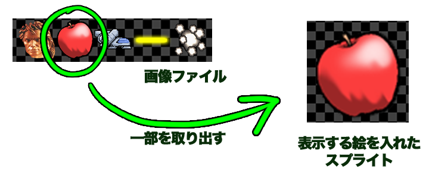

HSP : Hot Soup Processor ver3.6 / onion software 1997-2020(c)
標準スプライトプログラミングガイド

- はじめに
- 使用方法
- HSPDXプラグインとの違い
- スプライトとは
- 初期化とキャラクタパターンの登録
- スプライトの登録
- スプライトの移動
- スプライトパラメーター
- スプライト管理命令
- アニメーション
- スプライトの変形と効果
- スプライトコールバック
- BGマップ描画機能
はじめに
標準スプライトは、2Dゲームなどの描画に使用することのできる手軽な命令群を指します。
ゲームなどで使用する画像をまとめて動かしたり、検索したりといった管理を仕組みを提供します。
標準スプライト命令は、hspdxプラグインとして追加されていた命令と互換があり、
2D描画を手軽に扱うことが可能です。
これまでにも、HSP3で2D描画を行う際に、スプライト(矩形の画像)を利用するための手段はいくつか用意されていました。
・HSPDXプラグイン ・HGIMG/HGIMGXプラグイン ・HGIMG3プラグイン ・HGIMG4プラグイン ・mod_spriteモジュール
この中で、HSPDX、HGIMG、HGIMGXまでのプラグインはHSP2時代のもので、すでに開発が終了しており、
現在のOSや環境で動作させることが困難になっています。
HGIMG3/HGIMG4プラグインには、3D機能とともに高機能な2Dスプライトとしての
機能も持っていますが、座標をすべて実数で管理し、機能が多い代わりに
習得する内容も増えて手軽には扱いずらい所がありました。
そこで、最も長い歴史があり、多くのユーザーが使用してきたHSPDXプラグインの
命令をもとに、手軽で扱いやすい2D専用のスプライトとして用意されたのが標準スプライトです。
シンプルな命令でスプライトを表示でき、スプライトの画像を自由に登録できる
柔軟なシステムを搭載しています。また、スプライトコールバックやマップ描画など
ユニークな仕組みも導入され、元のHSPDXプラグインよりも利便性が向上しています。
座標も整数で管理されており、2DゲームやUI表示などで扱いやすいものになっています。
もちろんイベントリストによる自律移動や3Dとの連携については、従来のプラグインを利用することもできます。
標準スプライトは、HSP3Dish、HGIMG4がサポートする全プラットフォームで動作するほか、
HSP3標準ランタイムでもサポートすることを予定しています。
使用方法
標準スプライトの命令は、HSP3Dish及びHGIMG4ランタイムに統合されています。 スクリプトの先頭に「#include "hsp3dish.as"」という行を追加して HSP3Dishランタイムを指定すれば、標準スプライトの命令も使用できるようになります。
#include "hsp3dish.as" ; HSP3Dishランタイムを使用する
HSP3Dishランタイムの拡張版である、HGIMG4でも同様に標準スプライトの命令を使用できます。 もちろん、HSP3Dish/HGIMG4ランタイムの描画機能、HSP3の命令もすべて利用可能です。
HSPDXプラグインとの違い
標準スプライトの命令は、HSPDXプラグインの命令と多くの場合互換を持っていますが、
すべての命令で完全な互換性があるわけではありません。
HSPDXプラグインは、HSP2の時代に開発されたもので画面の初期化やパレットの利用など、
当時のディスプレイドライバに合わせた仕様も含まれていました。
標準スプライトでは、現在のディスプレイドライバの仕様を考慮して、パレットに関する
機能は削除しています。また、画面の初期化にかかる命令(es_screenなど)は、
HSP3Dish側の持つ仕組み(screen命令)を使う形になります。
また、HSPDXプラグインでは、es_sync命令によって画面の更新を行っていましたが、
この命令は廃止され(キーワードとしては認識されますが、何も行われません)、
HSP3Dishの描画に合わせた形で行うことになります。
多くの場合、過去のHSPDXプラグイン向けのスクリプトは手直しをする必要がありますので、
まったくそのまま動く互換性ではないことにご注意ください。
しかし、スプライトやキャラクターの設定に関しては、es_～で始まるHSPDXプラグインの命令を
ほぼすべてサポートしています。また、後に拡張されたHSPDXfixプラグインが持つ
特殊効果(エフェクト)や回転拡大縮小などの表現も内包しています。
定数や内部構造もHSPDXプラグインに近い形式になっているため、一部の手直しを行うことで
最新の環境でも動作することになるはずです。
HSPDXプラグインは、Windowsプラットフォームのみのサポートでしたが、
標準スプライトに置き換えることで、webブラウザやスマートフォン、LinuxやRaspberryPiなど
多くのデバイスで動かす道が開けます。
スプライトとは
スプライトとは、画面上の自由な場所に配置できて、好きな画像を表示できる
矩形(四角形)のことです。ちょうど、絵の描かれた四角いパネルを、画面の上に1枚1枚
貼り付けていくようなものです。
たとえば、シューティングゲームの自機や、敵キャラクターも図形を表示して
いるスプライトと考えることができます。さらに、ミサイルや爆発マークなど
すべての画像を出している最小単位がスプライトと言えます。このように、
決まった図形を画面の任意の場所に表示する、入れ物をスプライトと呼んでいます。

スプライトは、あくまでも入れ物なので、表示するための絵を用意する必要があります。 それを、キャラクタパターンと呼んでいます。 キャラクタパターンは、透明な背景を持つ画像ファイル(.PNGファイルなど)から 一部を切り取って持ってくることができます。

スプライトは、スプライトNo.という番号で管理され、その1つ1つに別々な画像を
表示させることができます。 スプライトとして表示されるキャラクタパターン
もまたキャラクタNo.という番号で管理されます。
キャラクタパターンは、あらかじめ画像ファイルを読み込み、その1部分を
切り出し、登録しておく必要があります。
スプライトができることはこれだけです。
1つのスプライトには、1つのキャラクタパターンを割り当てることができ、
途中で変更することもできます。また、複数のキャラクタパターンを一定時間
ごとに切り替えてアニメーションのように見せたり、スプライトに割り当てた
キャラクタパターンを変形させたり、合成の方法を変更することもできます。
初期化とキャラクタパターンの登録
スプライトを管理することにより、より手軽でシンプルにゲームなどを作成することができます。 実際にスクリプトを書いて試してみましょう。 標準スプライトの機能を使用するため、#include命令によってランタイムの使用を宣言します。
#include "hsp3dish.as" ; HSP3Dishランタイムを使用する
通常は、HSP3Dishを使用します。3D機能を併用する場合は、「#include "hgimg4.as"」
でも構いません。
さらに、スプライトを使用する場合には、最初にスプライトシステムを初期化する必要があります。
システムの初期化は、es_ini命令で行ないます。
es_ini ; スプライトの初期化
スプライトの初期化をしたら、スプライトの表示が可能になります。
最初にこの命令を入れないと、スプライトに関する命令を実行しようとした時に
「サポートされない機能を選択しました」というエラーが出ますので注意してください。
スプライトは、スプライトNo.という番号で管理され、その1つ1つに別々な画像を
表示させることができます。 スプライトとして表示される画像をキャラクタパターンと呼び、
これもまたキャラクタNo.という番号で管理されます。
この、スプライトNo.と、 キャラクタNo.をいくつまで登録できるようにするかを
es_ini命令による初期化時に指定することができます。
es_ini p1,p2,p3 システムの初期化 p1=スプライトの最大数 p2=キャラクタ定義の最大数 p3=周の精度
パラメータを省略すると、スプライトは512個まで、 キャラクタ定義数は1024
個まで、周の精度は1周64度としてスプライトを初期化します。
es_ini命令は何度でも実行することができるので、スプライトを
すべてクリアしたい時などにも使用可能です。
また、スプライトとキャラクタのパラメータに上限はあり
ませんので、大きな数値を指定することでスプライトやキャラクタの最大数を
自由に増加させることができます。ただし、その分メモリを多く消費します。
(逆に言えば、es_ini命令を実行しない限りはHSP3Dishは、余計なメモリを一切確保しません。)
スプライトを使用するための準備として、キャラクタパターンの登録を行なう
必要があります。
キャラクタパターンの登録方法は、まず、
es_size p1,p2,p3,p4 キャラクタサイズ指定 p1=キャラクタのXサイズ p2=キャラクタのYサイズ p3=ヒットチェック領域(%) (初期値=100) p4=特殊効果(EP値)の指定
でキャラクタサイズを指定します。(p1,p2)がキャラクタのX,Yサイズ(ドット単位)
になります。 p3は当たり判定を行なう際のヒットチェック領域が、全体の何%に
なるかを指定します。100を指定すると、(p1,p2)で指定したサイズいっぱいに
ヒットチェックを行ないます。(デフォルト値は100%になっています)
p4は、特殊効果(EP値)のデフォルト設定になります。通常は省略して構いません。
特殊効果(EP値)については、後ほど説明します。
キャラクタのX,Yサイズには特に制限はありませんが、 画像からはみ出すような
キャラクタパターンの指定は無効になります。
es_size命令の設定は、以降のキャラクタ定義でずっと有効になります。
これでサイズを設定したら、es_pat命令でキャラクタパターンを登録します。
es_pat p1,p2,p3,p4,p5 キャラクタパターン定義 p1=キャラクタNo. p2=キャラクタパターンの左上X座標 p3=キャラクタパターンの左上Y座標 p4=表示フレーム数(0) p5=ウインドウバッファID
p1のキャラクタNo.に、 (p2,p3)の座標を左上として、
es_sizeで設定した大きさのキャラクタパターンが登録されます。
ここで対象となる画像は、picload命令またはcelload命令であらかじめ
ウインドウバッファに読み込んでおく必要があります。
p5で、ウインドウバッファIDが指定されていればそのウインドウバッファから、
p5が省略されている場合は、現在の操作先にあたるウインドウバッファから、
画像の中の一部を切り出してきてキャラクタパターンとして登録します。
es_pat命令1回で、指定したキャラクタNo.にキャラクタパターンが登録されます。
たくさんのキャラクタパターンが必要な場合は、そのぶん登録をしておく必要があります。
p1パラメーターを省略するかマイナス値にした場合は、自動的に空いている
キャラクタNo.が割り当てられます。この命令を実行後に、システム変数statに
割り当てられたキャラクタNo.が代入されるので、それによってどのNo.が
使われたかを知ることができます。
p4のパラメータは、キャラクタアニメーションをするための設定です。
通常は省略しておいて構いません。
es_ini ; スプライトを初期化 buffer 3 ; ウインドウバッファID3を作成する picload "testchr.png" ; 画像ファイルを読み込む es_size 64,64 ; 64×64ドットサイズを指定 es_pat 0, 0,0 ; キャラクターNo.0に(0,0)からの画像を割り当てる gsel 0 ; 操作先IDを0に戻す
上の例では、「testchr.png」という画像ファイルをウインドウバッファID3に読み込み、 (0,0)からの64×64ドットの画像をキャラクターNo.0として定義しています。
スプライトの登録
キャラクタのパターンが登録できたら、次にスプライトの登録をします。 基本的な使い方は、
es_set p1,p2,p3,p4,p5 スプライト設定 p1=スプライトNo. p2=スプライトX座標 p3=スプライトY座標 p4=キャラクタNo. p5=オプション値 p6=優先順位(-32768～32767)
で、スプライトを登録することができます。
p1は、スプライトNo.、(p2,p3)は画面上でのスプライトの座標になります。
この座標を左上として、p4で指定したキャラクタNo.が表示されます。
スプライト座標は、-32767～32767までの範囲が設定可能です。
通常は画面の左上を(0,0)として画面解像度の範囲に表示されますが、これを
変更することも可能です。
p5はユーザーが自由に使用できるoption値を設定します。
(option値の詳細については、スプライトパラメーターの項目を参照してください)
p6でスプライトの優先順位を指定します。優先順位は値が小さいほど手前に
表示されるようになり、同一値の場合はスプライトの小さい方が優先されます。
また、 従来通りスプライトNo.の小さい順に描画するようにすることもできます。
以上で、スプライトを表示するための準備が整います。
実際の描画は、メインループでスプライト描画命令を実行した時に行なわれます。
たとえば、以下のようなメインループを構成してください。
*gmain redraw 0 ; 画面クリア es_draw ; スプライト描画 redraw 1 ; 画面の更新 await 1000/60 ; 時間待ち(1/60秒) goto *gmain
redraw 0～redraw 1までの間に描画命令を記述するのは、HSP3Dish共通の
ルールになります。
そこに、es_draw命令を記述することで、標準スプライトが管理する
スプライトの描画が行われます。
スプライトを表示する場合は、適切なタイミングでes_draw命令を入れて
描画を行ってください。
通常の描画命令も入れることができますので、mes命令やboxf命令などを
es_draw命令の後に記述すれば、スプライトよりも手前に描画されますし、
es_draw命令の前に記述すれば、スプライトの背景となります。
ループ内には、await命令で一定の待ち時間を必ず入れてください。
「await 1000/60」は、1/60秒単位でループする(画面を書き換える)という
結果になります。
このようにes_draw命令により、 あらかじめ登録されているすべてのスプライトを
描画します。
同時にたくさんのスプライトが重なって表示される場合は、
スプライトNo.が小さい数になるほど手前に(優先順位が高く)表示されます。
スプライトの設定を変更するための命令がいくつか用意されています。
es_chr p1,p2 chr値設定 es_type p1,p2 type値設定 es_flag p1,p2 flag値設定
これらは、p1でスプライトNo.を指定、p2で値を指定します。 es_chr命令は、キャラクタNo.を変更します。 es_type命令は、 スプライト識別用の値(type値)を指定します。 es_flag命令は、 スプライトフラグ値(flag値)を指定します。 (flag値、type値の詳細については、スプライトパラメーターの項目を参照してください)
スプライトの移動
スプライトの座標を変更する場合は、
es_pos p1,p2,p3,p4 スプライト座標設定 p1=スプライトNo. p2=スプライトX座標 p3=スプライトY座標 p4=設定オプション
を使用します。 p1でスプライトNo.を指定して、(p2,p3)でX,Y座標を設定します。
es_posは、設定済みのスプライトの座標だけを変更する命令です。
1フレームごとに自動的にスプライトの座標を移動させることも可能です。
以下の命令が用意されています。
es_apos p1,p2,p3 スプライト移動設定 p1=スプライトNo. p2=1フレームにX方向に移動するドット数 p3=1フレームにY方向に移動するドット数 p4=移動スピード(%)
p1でスプライトNo.、p2,p3でX,Y方向の増分を指定します。
p4で移動スピードを%で指定します。p4を省略するか、100を指定した場合は、
100%のスピードとなり、1フレームに(p2,p3)で指定した増分だけ移動し続けます。
もし、移動スピードを50(%)にして、増分が(+4,-2)に指定された場合は、
実際には、(+2,-1)の増分になります。増分の単位は、1ドット以下になった場合でも
正確に移動を行ないます。 たとえば、1フレームに、(1,0)の移動を10%
で行なった場合でも、 10フレーム後に1ドット移動するように計算されます。
es_adir p1,p2,p3 スプライト移動方向設定 p1=スプライトNo. p2=移動する方向 p3=移動スピード(%)
es_adir命令は、es_apos命令と同じく自動的にスプライトを移動するように設 定する命令ですが、es_adir命令では方向を指定して移動を行ないます。 p1でスプライトNo.、p2で方向を指定します。 方向は、es_iniで設定した数値 までで指定します。0が真下となり、反時計回りに増加していきます。 p3で移動スピードを%で指定します。 p3を省略するか、100(%)を指定した場合 には、指定した方向に1フレームにつき1ドットの距離を移動します。
es_aim p1,p2,p3,p4 スプライト参照座標設定 p1=スプライトNo. p2=移動先のX座標 p3=移動先のY座標 p4=移動スピード(%)
es_aim命令は、 es_adir命令と同じく指定した方向にスプライトを移動させる
ためのものです。 es_aim命令では、方向の替わりに移動する目標となるX,Y座標を
指定します。スプライトは、現在の座標から、目標となる座標への方向を
計算し移動を開始します。
この命令は、たとえば敵から発射されるミサイルがプレイヤーを狙って移動
するようにしたい時などに役立ちます。
p4で移動スピードを%で指定します。 p3を省略するか、100(%)を指定した場合
には、指定した方向に1フレームにつき1ドットの距離を移動します。
スプライトを移動させる上で知っておくと便利な機能の1つとして、 スプライト
自動削除機能があります。これは、画面外の座標が設定されたり、スプライトの
自動移動で画面外へ出てしまったものを自動的に削除する機能です。
このために、スプライト有効エリアというのが設定されています。
スプライト有効エリアの範囲内にあるスプライトのみが有効となり、
その範囲から出たスプライトは自動的に削除されるというしくみになっています。
通常、スプライト有効エリアは、es_ini命令を実行したウインドウの表示範囲の外128ドット以内になっています。
たとえば、(640×480)ドットの場合、スプライトの取れる座標の範囲として、(-128,-128)から
(768,608)までということになります。
このスプライト有効エリアを変更する命令がes_area命令です。
es_area p1,p2,p3,p4 スプライト有効エリア設定 p1=有効エリアの左上X座標 p2=有効エリアの左上Y座標 p3=有効エリアの右下X座標 p4=有効エリアの右下Y座標
スプライトの有効エリアを設定します。 スプライト座標が(p1,p2)-(p3,p4)の範囲内にないものは、 自動的に削除されます。
スプライトパラメーター
スプライトに設定された情報を読み出したり、検索することも可能です。以下 のような命令が用意されています。
es_get p1,p2,p3 スプライト情報取得 p1=情報が代入される変数名 p2=スプライトNo. p3=info number
この命令では、 p1で指定した変数名に、p2のスプライトNo.の情報を代入しま す。情報の種類は、p3のinfo numberで指定します。 詳しくは命令リファレン スを参照してください。
スプライトのtype値は、ゲームなどで物体の識別をする時に有効に使うことが
できます。type値は、es_type命令で設定することができます。
この値は、ユーザーの好きに設定することができる識別用の値となります。設
定できる値は、
1,2,4,8,16,32,64,128,256,512,1024,2048,4096,8192,16384,32768…
と倍々に増えていきます。計32種類まで使用できます。
es_set命令でスプライトを設定した直後は、type値は1になっています。
この値は、衝突判定やスプライトの検索対象を指定するのに使用されます。
スプライトが示す物体の種別を登録しておくのが主な利用法です。
たとえば、シューティングゲームで自機はtype1、敵はtype2、敵のミサイルは
type4、自分のミサイルはtype8、といった感じでtype値をスプライトを出す時
に設定しておきます。
こうしておけば、自機が敵か、または敵ミサイルに衝突しているかを判定する
場合にチェックがしやすくなります。es_check命令では、複数のtype値を同時
に判定できるので、 この例で言うと自機のスプライトに対して、敵(type2)と
敵ミサイル(type4) が衝突しているかを調べて自分の生死を決めることができ
ます。
また、自分のミサイルが敵に衝突しているかを判定する場合には、まず
es_find命令でtype8のスプライトだけを検索して、 その1つ1つが、敵(type2)
と衝突しているかを判定すればいいわけです。
このようにtype値をあらかじめ割り振っておくことで、スプライトの管理をス
マートに行なうことが可能です。
スプライト管理命令
複数のスプライトをまとめて管理するための命令が用意されています。 これらの命令をうまく使って、適切にスプライトを管理してください。
es_new p1,p2 新規スプライト取得 p1=新規No.が代入される変数名 p2=検索を開始するスプライトNo.
この命令は、スプライトNo.の中で使われていないNo.を検索します。
p2で指定したNo.以降で空きのあるNo.を、p1で指定した変数に代入します。空
きがない場合は、-1が代入されます。
この命令は、以前のバージョンとの互換性のために残された命令です。以前の
バージョンを使用して作成されたスクリプトを動かす時以外はes_exnew命令を
使用するようにしてください。
es_exnew p1,p2,p3,p4 新規スプライト取得 p1=新規No.が代入される変数名 p2=検索を開始するスプライトNo. p3=検索を終了するスプライトNo. p4=増分
この命令は、スプライトNo.の中で使われていないNo.を検索します。
p2～p3で指定したNo.の間で空きのあるNo.を、p1で指定した変数に代入します。
空きがない場合は、-1が代入されます。
p4には検索するスプライトNo.の増分を指定します。 省略するとp2、p3から自
動的に設定するため、通常は明示する必要はありません。
※es_new命令と同様の処理を行いたい場合は、p3に-1を指定してください。
es_find p1,p2,p3 スプライト検索 p1=スプライトNo.が代入される変数名 p2=検索対象となるtype値 p3=検索を開始するスプライトNo. p4=検索を終了するスプライトNo. p5=増分
この命令は、登録されているスプライトの中で指定したtype値を持つものの
スプライトNo.を検索します。
p2のtype値には、複数のtypeを同時に指定することができます。
たとえば、type1とtype4を対象にする場合は、1+4で5を指定します。
p2の指定を省略するか、 0を指定した場合にはすべてのtype値を持つスプライトが
検索の対象になります。
検索は、p3で指定されたスプライトNo.からp4で指定されたNo.まで順番に探し
ていきます。
これを省略すると、No.0からすべてのスプライトを検索します。
該当するスプライトが見つかった時点で、p1に結果を代入して終わります。
検索の結果、該当するスプライトがなかった場合には、-1が代入されます。
p5は検索するスプライトNo.の増分を指定するもので、 省略するとp3、p4から
自動的に設定されますので通常は指定しなくても構いません。
es_check p1,p2,p3,p4,p5,p6 衝突判定取得 p1=結果が代入される変数名 p2=チェックの対象となるスプライトNo. p3=検索対象となるtype値 p4=判定フラグ(0=回転を考慮しない、1=回転を考慮する) p5=検索を開始するスプライトNo. p6=検索を終了するスプライトNo.
es_check命令はスプライト同士の衝突判定を行なう命令です。
p2で指定されたスプライトNo.と衝突している (重なっている)スプライトを検索して、
p1で指定した変数に結果を代入します。
p3で衝突判定の対象となるtype値を指定することができます。
p3が省略されるか、 0の場合は、すべてのスプライトとの衝突を判定します。
p3のtype値には、複数のtypeを同時に指定することができます。
たとえば、type1とtype4を対象にする場合は、1+4で5を指定します。
衝突判定には、キャラクタパターンを登録した時に指定したヒットチェック領
域(%)が使用されます。 実際に画像が重なっていても、ヒットチェック領域の
範囲が重ならない限りは衝突とみなされません。
結果はp1で指定した変数に代入されます。もし、衝突しているスプライトがな
かった場合には-1が、 衝突しているスプライトがあれば、そのスプライトNo.
が代入されます。衝突しているスプライトが複数あった場合には、スプライト
No.の少ないものが優先されます。
一度設定したスプライトを消去(削除)する場合は、以下の命令を使います。
es_kill p1 スプライト削除 p1=スプライトNo.
p1で指定したスプライトNo.は削除され未登録になります。
es_clear p1,p2 複数スプライト削除 p1=スプライトNo. p2=削除される個数
p1で指定したスプライトNo. 以降のスプライトが削除され未登録になります。
p2で削除されるスプライトの数を指定することができます。
p1とp2の指定を省略した場合は、すべてのスプライトが削除されます。
アニメーション
スプライトには、通常1つのキャラクタNo.しか指定することはできません。
これは、スプライトに対して常に静止画像を貼り付けていることになります。
しかし、ゲームなど多くの場合は画像がアニメーションしていることが多いはずです。
標準スプライトでは、キャラクタパターンを定義する時にアニメーションの
設定を行なうことが可能です。
アニメーション設定されたキャラクタは、自動的にキャラクタNo.が変わり、
スプライトを登録するだけで自動的に画像がアニメーションで表示されるようになります。
たとえば、 キャラクタNo.が自動的に1→2→3→4というように変化するように
設定するには、
es_size 32,32 es_pat 1,0,0,8 es_pat 2,32,0,8 es_pat 3,64,0,8 es_pat 4,96,0
のように設定することができます。まず、es_size命令で32x32ドットの
キャラクタの設定をして、es_pat命令で1から4までのキャラクタを定義します。
es_pat命令の4番目のパラメータに、1以上を指定した場合は、アニメーション
するキャラクタとなり、指定した数のフレームだけ待ってから次の番号に切り
替えます。 つまり、上の例ではキャラクタNo.1を表示して、その8フレーム後
に、キャラクタNo.2を表示します。 そして、またその8フレーム後には、キャ
ラクタNo.3になります。 さらに8フレーム後にキャラクタNo.4に切り替わり以
降はそのままとなります。
このように連続した番号で、アニメーション用の待ちフレーム数を指定するこ
とで次々にキャラクタNo.を変化させることが可能になります。
しかし、上の例ではキャラクタNo.が4になった時点で止まったままになってし
まいます。これを、1→2→3→4→1→2→…というように無限に繰り返してアニ
メーションをするように設定することも可能です。
es_link p1,p2 アニメーション設定 p1=キャラクタNo. p2=ループアニメーションするキャラクタNo.
es_link命令は、アニメーションで次に表示するべきキャラクタNo.を指定する
ための命令です。
p1で指定したキャラクタNo.が、指定されたフレームだけ表示した後に、 p2で
指定したキャラクタNo.に切り替わるように設定を行ないます。
ですから、1→2→3→4→1→2→…という設定にする場合は、
es_size 32,32 es_pat 1,0,0,8 es_pat 2,32,0,8 es_pat 3,64,0,8 es_pat 4,96,0,8 es_link 4,1
このようにスクリプトを書けばOKです。
スプライトの変形と効果
スプライトコールバック
BGマップ描画機能